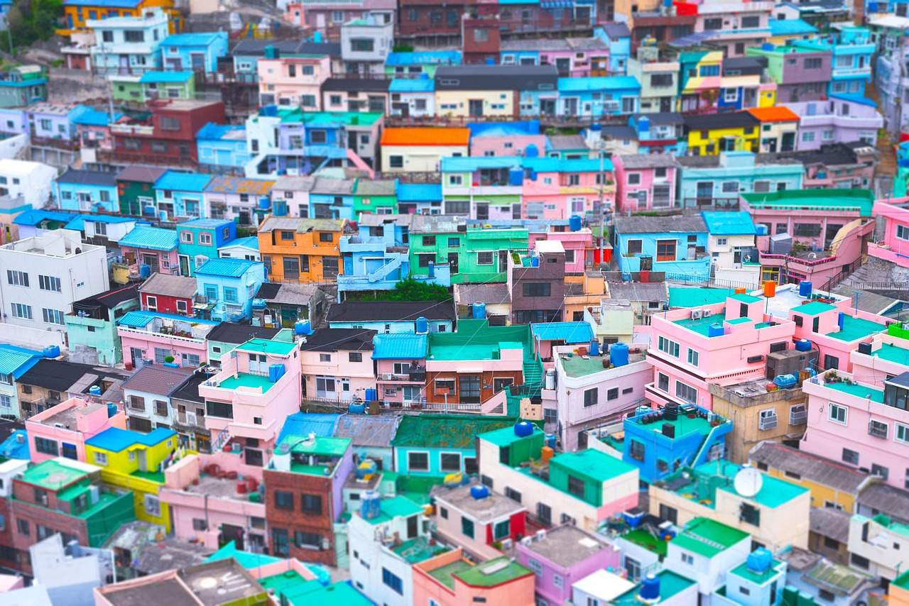

La 5 ème géneration est là !
La cinquième génération de la K-pop a émergé vers 2023, marquant une nouvelle ère d'innovation musicale et visuelle. Portée par des groupes comme NewJeans, RIIZE ou Zerobaseone, elle se distingue par une forte influence des réseaux sociaux et une esthétique rafraîchissante.

Les OST de K-Drama en 2025 : quand la K-pop sublime l'émotion
Les derniers OST de K-pop captivent avec des voix émouvantes et des mélodies poignantes. Des artistes comme Baekhyun, Heize ou AILEE apportent une profondeur unique aux dramas coréens récents. Ces chansons renforcent l'intensité des scènes et touchent le public au cœur. De plus en plus, les OST deviennent aussi populaires que les titres principaux des idols.